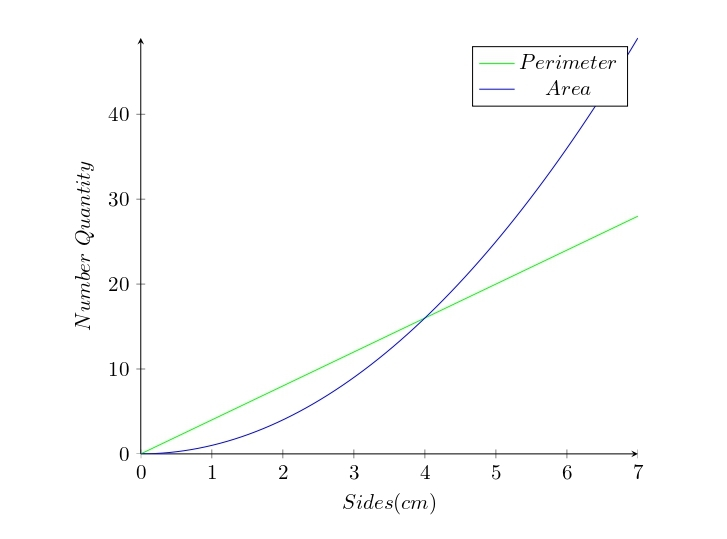

By the time we have a side length of 5cm, the perimeter will be 20cm, and the area 25cm2. Although the actual size of the area has, since the beginning, been the largest, considering it has a whole other dimension, clearly it is only now beginning to also have a higher number.
This is because when we increase the side length, the perimeter only has one parameter, one element, changing. The fact that there are four sides stays the same, just their length changing in the operation. This is why it is at four that the perimeter and area's quantities have the same number, from which point the area becomes larger, as for it both the parameters keep increasing. The previous story can also be told through a graph.
You will, possibly, as you go through math, slowly come to see graphs less as a strange businessman's tool, and more as a friend.